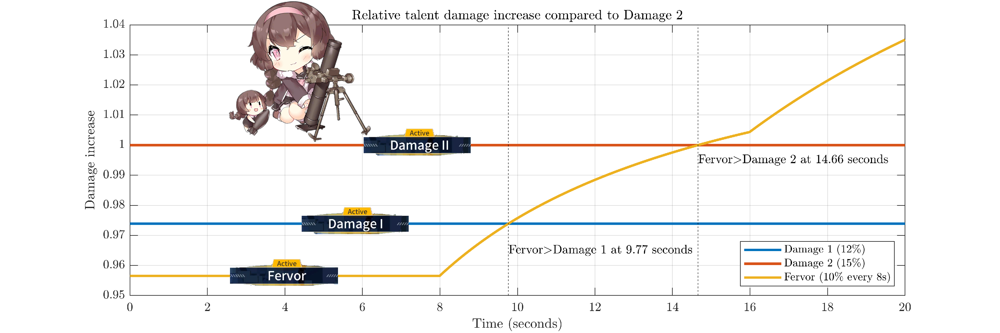
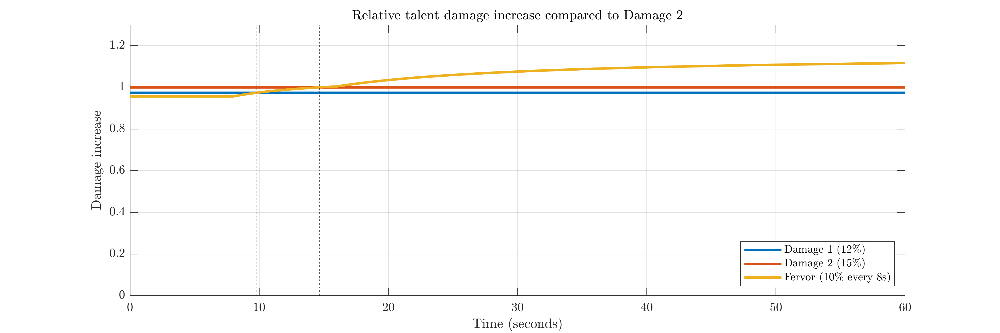
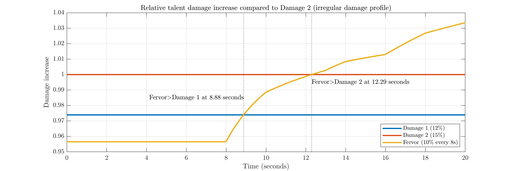
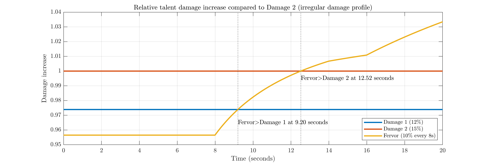

Fairy calibration is hell, so it's best to get a good talent and stick with it. Damage 1/2 and Fervor have the widest utility and thus are almost always considered the best talents to have. The ROF boost of Aim on your rifles might be nice, but when you don't have rifles in your team, it's worthless. If you get the choice between these 3 talents, which one should you take?
Let's start out with something simple. Under the very questionable assumption your team does constant damage over time, here's a chart of the relative total damage each talent lets you deal (compared to Damage II):

It's zoomed in quite a bit to show detail. If the total relative damage is greater than 1 at some time, that talent is better than Damage 2 for fights of that length.

However, the absolute differences in performance are quite small - here's the same chart, but zoomed out and over 60 seconds.
For a better example, let's take the approximate damage profile of a selfbuff rifle in a 2RF3HG echelon - a 75% self buff with 5/8 uptime and an ICD of 5 seconds, plus three 25% buffs with 8/12 uptime, ICD 6 seconds from the handguns. Fervor becomes better slightly earlier in that case, passing Damage II at 12.29 seconds.

Just by looking at the talents, it's clear that Damage 2 is best for short fights and Fervor for long/boss fights with it ramping all the way up to a 33% damage boost after 16 seconds. The land between is a bit interesting, though - the breakpoints don't land on nice, round numbers, and they will vary significantly by echelon. Real battles can cause even more variation.
Using Damage 2 as the "reference" talent, Fervor starts off dealing 1.1/1.15 = 95.6% of what Damage 2 does. After 8 seconds, it starts increasing, passing Damage 1 shortly after and Damage 2 slightly later. After the first 20 seconds of the fight, Fervor will have boosted damage by ~3.5% overall compared to Damage 2.
Extending this even further out, after 60 seconds, Fervor will be above Damage 2 by ~11.7% (the theoretical maximum at infinite time is 1.1^3 /1.15 = 1.1573 = 15.73% more damage).
The first chart assumes the echelon does constant damage over time, which is obviously not the case in a real battle considering all the different skills out there. Most buff skills activate ~6 seconds in, so they'll line up decently with the second stack of Fervor and get extra value. Here's some simulator numbers for total damage dealt by two arbitrary generic teams for some more references on the actual relationship:
STAR/M4/AN/45/P22/Artillery:
| Time | Damage 2 | Fervor | Change w/ Fervor |
|---|---|---|---|
| 8s | 99568 | 95624 | -3.96% |
| 12s | 174389 | 174245 | -0.08% |
| 20s | 284300 | 295609 | +3.977% |
WA/SVD/Px4/Five-Seven/Mk23/Artillery:
| Time | Damage 2 | Fervor | Change w/ Fervor |
|---|---|---|---|
| 8s | 134436 | 128629 | -4.32% |
| 12s | 246406 | 246408 | ~0% |
| 20s | 416843 | 435808 | +4.55% |
Rather imprecisely, it looks like Fervor starts to pass Damage 2 closer to 12 seconds in, which lines up better with the RFHG chart above. This is lower than the constant-damage assumption's time because of skills (like HGs) kicking in around 6-14s making Fervor's higher multiplier at 8 seconds and beyond more valuable, and Damage 2's higher early multiplier less valuable. Early burst damage skills like Vector's molotov on the other hand would push things further in Damage 2's favor.
Another simple case - let's say that, rather than damage being constant, it's 1 for time<6s, 1.75 for 6-14s, and 1 afterwards (75% is used as a fairly typical self-buff skill).

We end up with this plot for the first 20 seconds - now, Fervor passes Damage 1 at 9.2 seconds and Damage 2 at 12.5 seconds. This of course is still a massive simplification but shows the general principle. As before, the y-axis is very compact to make the changes more visible. Noticing the difference between these in a real battle will prove to be more challenging.
So, all-in-all: there's no precise time when Fervor becomes optimal as no team deals constant damage through the fight. I would consider 12-15 seconds being a reasonable general timeframe for which Fervor starts to win out. Many boss fights can stretch beyond 30 seconds, where Fervor's benefit is invaluable. It also has nice interactions with stuff like AS Val mod and Python, which is not accounted for here. On the other hand, for short fights with high-damage enemies, the extra edge Damage 2 gives in the first 4-6 seconds may be useful. If you can choose freely, I would almost always recommend using Fervor.
Additional Notes
Numbers here are for the 5-star talent stats. Exact values will vary slightly at lower rarity.
As an interesting extreme case, the fastest team in the Grape Juiced speedrun was an M4 exodia with Python, Clear, Contender, and Stechkin buffing with a Warrior fairy. While Damage 2 and Fervor talents both worked to achieve a competitive time of 10.57 seconds (killing Grape in 5 M4 cannon shots), Fervor appeared to be required for the very top times (10.50-10.53 seconds). This strategy required kiting Python for the first 5 or 6 seconds to delay her distribution of the FP and ROF stack from the Warrior skill, so initial DPS was even lower and more of it was concentrated past 6 seconds. It's a very specific case, but it means Fervor can pass Damage 2 as early as 10.5 seconds into battle.
In almost all cases, the preferred talent does not depend on the fairy. You can pick between Damage I/Damage II/Fervor based on the timeframe you believe is most relevant and what the calibration tickets offer you. The cases I can think of where this may slightly change are:
- Armor Fairy: may prefer Armor II over a damage talent to better stack armor. May prefer Fervor over Damage II as many armor-stacking battles (Judge) are long.
- Airstrike Fairy: may prefer Damage II over Fervor as its skill lends itself to shorter fights against weaker enemies. Airstrike has overall very limited use due to increasingly tough enemies, so calibrating this to a specific talent is probably a waste.
- Parachute Fairy: may benefit from Critical II on a duplicate to specialize in debuffed fights. I would still strongly recommend Fervor/Damage II/Damage I on your first 1-4 parachutes.
- Taunt/Illumination/Beach/Parachute fairy: a dupe copy may be able to use Aim, as the fairies are rather dupable and see good use in RFHG echelons. This evaluation is rather complicated and I certainly would not recommend Aim on your first copy.
- Assault is a bad talent, even on ARSMG-oriented fairies like Shield. Don't take it.
- Fervor is far better on the reworked Sniper fairy - its active is largely worthless in short/mob battles, so it should only be used in longer battles anyways.
- To get the absolute highest base FP multiplier, a Fervor Artillery fairy could be nice (for stuff like charged shot/nuke RFs). On the other hand, Damage II may be useful for slightly lowering requirements in farming maps like 13-4.
These are all on the rather extreme end of min-maxing. For typical play, you will be totally fine with any of Damage I/II/Fervor on each fairy.
"Flex"/cosmetic talents are not available from calibration. They are only available on specific ranking fairies given out for scoring in the top 10%, and if you calibrate that fairy to something else, you cannot get it back.